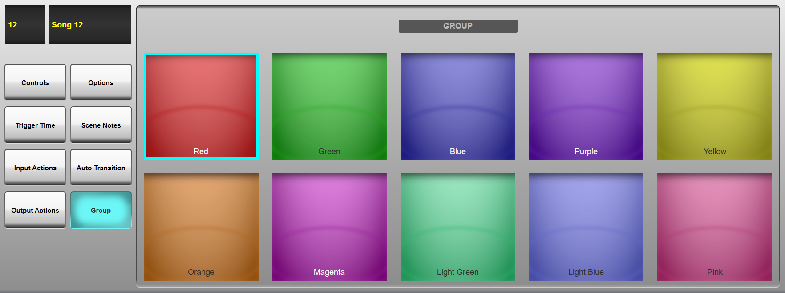
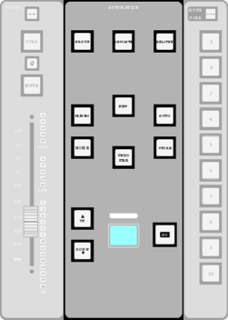

Automation Groups
If you want changes made to the active scene to be reflected in a selection of other scenes (or all scenes), those scenes can be placed in a scene group. Whenever you make changes, you can select whether or not to make those changes across all scenes in the group, and whether or not those changes should be relative to each scene's previous values or absolute across all scenes in the group. Scene groups are distinguished by their colours.
To place scenes into a group:
Touch the Group column for one of the scenes to be grouped. The group configuration page will open in the bottom half of the screen.

Note: To navigate from a different Configuration page, touch the Group button in the left of the screen.Touch one of the coloured boxes which appears. This is now the colour for that scene group, and it will appear in the scene list Group box for that scene.
The colour bar above the automation LCD in the Master Tile will also light to show the group colour of the currently selected scene.
Repeat the process for all other scenes to be put into that group, selecting the same colour each time.
To create another group, simply repeat this process with a different colour.
Group All
To apply changes to all scenes, tap the Group column heading until it turns green. All scene group buttons will turn cyan. This will override any specific colour groups and propagate changes to every scene in the list.
Enabling Group Changes

The Group button in the Automation area of the Master Tile defines whether or not changes made to the active scene are also made to any scenes grouped with it.
Press the Group button to activate Group mode. The button will flash in the colour of the Group being worked on (i.e. that of the active scene; or cyan if in Group All mode). The active Group's scene list Group boxes will also 'light' when the group is active. Any changes made from the point at which Group mode was engaged will be applied to the active scene and all scenes in the Group when the Store button is pressed, which will light yellow to indicate when Group changes are pending.
Alternatively, press & hold the Group button to carry over all changes made in the active scene to the Grouped scenes when pressing Store, i.e. changes made both before and after the Group button was engaged.
Whenever the Group button is unlit, changes stored to the active Scene will only affect that scene.
When the Group button is active, the Absolute and Relative buttons next to it define whether changes to the active scene are copied as absolute positions (the new position in the changed scene becomes the new position in all the grouped scenes) or as relative positions (each grouped scene is changed up or down by the same amount).
For example, a fader is at -6 dB in the active scene and at -20 dB in a scene within its group. If that fader is moved to -3 dB in the active scene (i.e. up by 3 dB), the fader position for the grouped scene will become -3 dB if Absolute mode is selected, or -17 dB (-20 dB + 3 dB) if Relative mode is selected.
The group function can be globally disabled by touching the Group column title in the Automation screen until it turns red. The column contents will also become greyed out, indicating that the column is inactive and no group changes will occur.
Note: The Master Tile Automation buttons are duplicated in the main screen: select the Controls button in the left side of the configuration page, and soft versions of the hardware buttons will appear.Links to Further Automation Help:
- Automation Overview
- Scene Time Functions
- Scene Names and Notes
- Scene Input and Output Actions
- Function Filters
- Scene List Management
- Automation Preview Mode
Index and Glossary